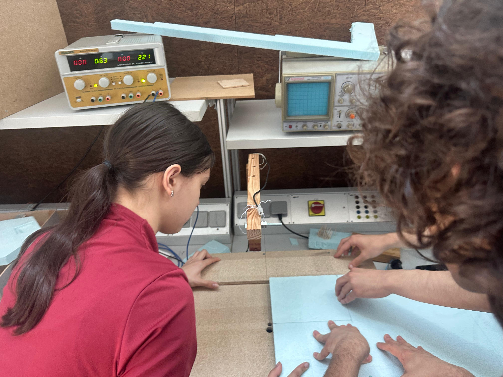
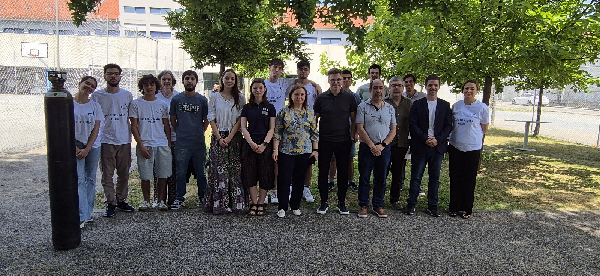

Quem somos?
O CATI – Carlos Amarante Tecnologia e Inovação é um clube da Escola Secundária Carlos Amarante é um espaço de aprendizagem colaborativa, em ciência, tecnologia, matemática, artes, que proporciona aos alunos que o frequentam desafios e oportunidades de aprendizagem adequados às suas capacidades e competências, nomeadamente através do desenvolvimento e execução de projetos com elevado potencial de atração e que impliquem o trabalho em equipas multidisciplinares, na procura de uma solução funcional.
O CANSAT surgiu do esforço conjunto da Matilde, da Leonor, do Luís, do Nicolas, do Mário e do David que acalentaram o sonho e rapidamente o desenvolveram, consubstanciando-se no Carlitos. A marcha inexorável do tempo o progresso pessoal dos alunos para novas fases das suas vidas pessoais, pois concluíram com sucesso o ensino secundário deixaram a ESCA.
O que fazemos?
O CATI – Carlos Amarante Tecnologia e Inovação é um clube da Escola Secundária Carlos Amarante é um espaço de aprendizagem colaborativa, em ciência, tecnologia, matemática, artes, que proporciona aos alunos que o frequentam desafios e oportunidades de aprendizagem adequados às suas capacidades e competências, nomeadamente através do desenvolvimento e execução de projetos com elevado potencial de atração e que impliquem o trabalho em equipas multidisciplinares, na procura de uma solução funcional.
Equipa em Destaque
Promover o reconhecimento da equipa que o realizou face à comunidade;
Execução e Demonstração
Responsabilizar a equipa de trabalho pela execução, demonstração de funcionalidade do produto realizado, se possível, potenciando a realização de outros projetos científicos subsequentes;
Competências de Comunicação
Melhorar as competências de comunicação através da apresentação do trabalho à comunidade (escolar, área da escola, científica, etc.);
Promoção do Clube
Cativar alunos para o clube mostrando e demonstrando o que o CATI potenciou;
Missão
Promover o desenvolvimento de competências dos alunos da Escola Secundária Carlos Amarante, do 7.º ao 12.º ano, para que, aliando a tecnologia, a inovação, a ciência, a matemática, a engenharia e as artes, se tornem construtores do próprio conhecimento através do aprender fazendo

Fomentar a aprendizagem colaborativa entre pares, bem como da autonomia, da liderança e do rigor científico, ao proporcionar a execução de projetos desafiadores e inovadores, e a desenvolver competências diversas ao preparar os alunos para comunicar com excelência as inovações e trabalhos da sua própria autoria.
Valores da CATI
O nosso código de valores encontra-se alinhado com os Direitos Humanos e o respeito pela natureza, preconizando:
Ser construtor do próprio conhecimento
Construir/desenvolver e errar são faces da mesma moeda quando cada um se dedica a ser autor do seu desenvolvimento, pelo que a cada aluno se requer o trabalho necessário para aprender mais e melhor e a coragem de experimentar novas ideias e formas de fazer.
Aprendizagem colaborativa
Sozinho vai-se mais depressa. Em equipa, mais longe. É por isso que cultivamos um ambiente propício à aprendizagem colaborativa, fomentando o surgimento de equipas entre alunos de diferentes anos de escolaridade, promovendo a partilha de conhecimentos, o questionamento contínuo, respeitando a diversidade de talentos.
Resiliência
O importante não é errar. Valorizamos a capacidade crítica, corrigir o erro e testar novamente.
Excelência
Em cada dia, ser ou fazer melhor que no anterior. Em todos os domínios: ser pessoa, conhecimentos técnicos e científicos, etc….
Ética e sustentabilidade
Construir e desenvolver com ética e procurando implementar modelos sustentáveis de soluções de engenharia que compatibilizem o progresso tecnológico com o respeito pelo meio ambiente.
Inovação
Promovemos a audácia de pensar diferente. Aliar ciência, artes, engenharia, matemática e tecnologia de forma diferente, procurando criar soluções originais. Incentivamos a experimentação e a transformação de ideias abstratas em protótipos funcionais que desafiam o status quo.
Metodologia
Aplicamos o modelo 4A, no CATI, centrado no aluno como protagonista da sua evolução, apelando nomeadamente à:

Fomentar a aprendizagem colaborativa entre pares, bem como da autonomia, da liderança e do rigor científico, ao proporcionar a execução de projetos desafiadores e inovadores, e a desenvolver competências diversas ao preparar os alunos para comunicar com excelência as inovações e trabalhos da sua própria autoria.
Autonomia
o aluno conduz e gere, a pesquisa e a tomada de decisão;
Ação
o aluno constrói o seu conhecimento através da filosofia MAKER;
Apoio
o aluno é acompanhado por aluno mais experiente no desenvolvimento de tarefas básicas estruturantes, passando depois a estar integrado numa equipa, dentro da qual assume uma função, adequada à sua responsabilidade e idoneidade;
Apresentação
o trabalho realizado é sempre apresentado por quem o realiza, valorizando o aluno e responsabilizando-o na procura da excelência e rigor de resultados;